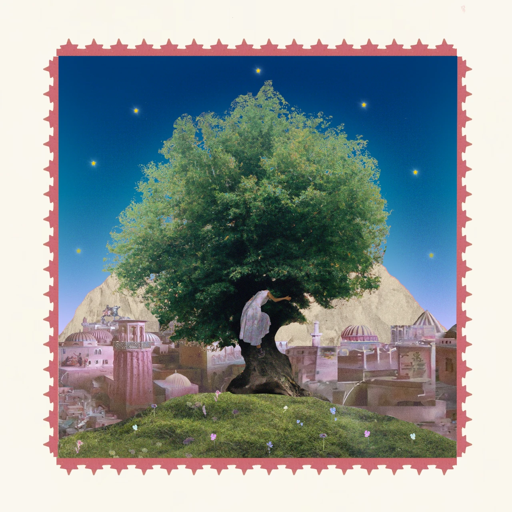

Swiss saxophone player Sara El Hachimi is a reflective musician who knows how to let her feelings, visions, and thoughts flow into the music and be reflected in it.
Her music and improvisation are sensitive, gentle, and intelligent, and testify to the power that flows from within and can reach the listener.
Believing profoundly in the potency of authentic self-expression, Sara views her musical journey as a means of contributing positively to the world.
She recognizes the opportunity to play music as a gift and a tool to cope with life’s experiences, exploring her inner self and dealing with the essence of her psyche.
Her aspiration is to extend this gift to her listeners, providing them the opportunity to connect with their emotions, feel less alone through the honest expression of an artist, make them feel and experience something in the moment, detached from the daily grind, and even facilitate a sense of calm within the listeners' nervous systems — values she deems particularly essential in today's societal context.
Through her honest music, she tries to bring more humanity, love, connection, and awareness to whatever space she brings her sound to.
A graduate in Jazz Saxophone from Jazzcampus Basel, Switzerland, she had the opportunity to take lessons with Daniel Blanc, Domenic Landolf, Mark Turner, Chris Cheek, and Guillermo Klein (composition).
In 2021 she moved to Barcelona, where she studied for one year and recorded her first album:
pencil in my pocket In 2023, she was honored with the sponsorship prize for music from her region in Switzerland, followed in 2025 by this award from the city of Olten.
In the same year, she also completed her master's degree in jazz music education at Jazzcampus Basel.
Her band has been selected for a nationwide tour in 2026 as part of Suisse Diagonales.
Playing across various projects and ensembles — including Okvsho, with whom she has already been on several European tours, the Basel Jazz Orchestra, and her already renowned personal project — Sara thrives as a performer, composer, bandleader, and collaborator in jazz, pop, contemporary, and experimental music, and releases her first album under her name in 2024, where she can also be heard as a singer and flutist.
Sara El Hachimi has a unique sound as an instrumentalist, composer, and musician, which has a clear, singing component and yet sounds warm and round. Her music is melancholic yet colourful and hopeful, drawing on the rich harmonic palette of contemporary jazz in combination with adventurous singer-songwriting and melodic nuances.
Drawing inspiration from artists like Samora Pinderhughes, Wayne Shorter, Brad Mehldau, and Saya Gray, a unique sound is produced with which she expresses a vulnerable gaze on herself and the world around her.